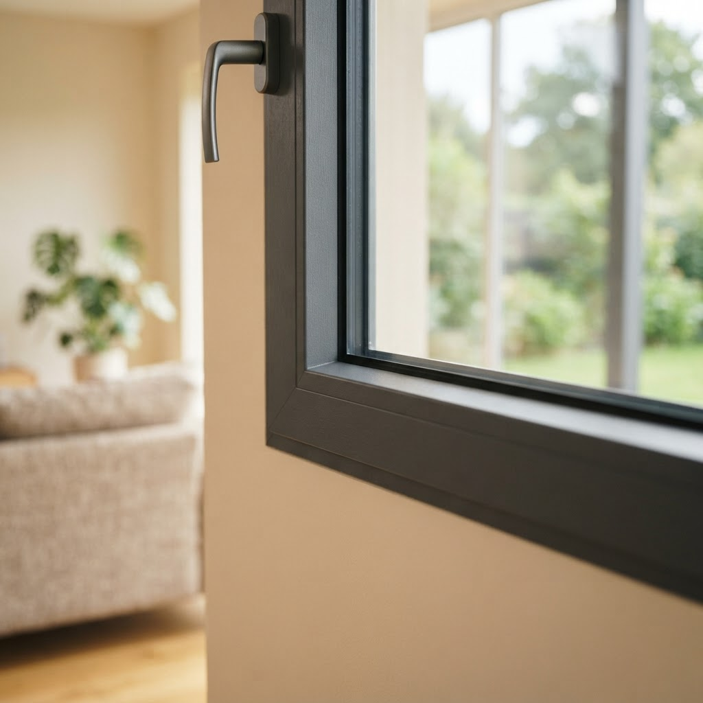

Как заказать установка окон в панельном доме в Северном округе

Содержание
Живете в Северном округе Москвы и планируете ремонт в панельке? Мы знаем, как заказать установку окон в панельном доме в Северном округе так, чтобы в квартире стало тихо и тепло.
Нужно ли расширять проем для установки новых окон?
В типовых панельных домах расширение проема обычно не требуется и даже опасно, так как можно повредить несущие элементы плиты. Достаточно правильного замера, чтобы подобрать конструкцию, которая идеально встанет в штатное место. Мы добиваемся плотного прилегания за счет грамотного подбора комплектующих, а не изменения геометрии здания.
Что дальше?
Запишитесь на бесплатный замер: наш мастер приедет, рассчитает стоимость на месте и зафиксирует итоговую цену в договоре.
Почему сложно заказать установку окон в панельном доме в Северном округе
Главный миф гласит, что в панельных домах невозможно добиться хорошей теплоизоляции из-за тонких стен. Это не так. Основная проблема кроется не в бетоне, а в нарушении технологии монтажа. Мастера часто пренебрегают правильным утеплением монтажного шва и не учитывают особенности старых проемов, где бетонные плиты имеют отклонения по уровню. Мы работаем иначе: проводим точные замеры с учетом кривизны стен, используем паро- и гидроизоляционные ленты по ГОСТу, которые защищают монтажную пену от разрушения под воздействием осадков и ультрафиолета. В Москве климат переменчив, поэтому герметичность стыка между рамой и проемом — это 80% успеха. Качественный монтаж в панельке требует тщательной подготовки проема, удаления всей старой пыли и строгого соблюдения температурного режима при работе с герметиками. Мы не просто ставим стеклопакет, мы создаем контур, который не продувается зимой и не дает плесени шанса появиться из-за влажности. Делаем качественно, чтобы вы забыли о сквозняках на десятилетия.
Разбор случая с продуванием
В редакцию обратился житель дома серии П-44 с жалобой на холод от подоконника. При осмотре выяснилось, что при предыдущей замене окон монтажники просто запенили щели и закрыли их пластиковыми откосами без должной гидроизоляции. Внутри полости образовалась наледь, а со временем — грибок. Мы полностью демонтировали конструкцию, очистили проем до несущей плиты, обработали поверхность антисептиком и установили окна с использованием теплых подставочных профилей. Это исключило промерзание в зоне примыкания подоконника к окну. Результат показал, что даже в стандартной панельной серии можно добиться тишины и комфортной температуры, если не экономить на расходных материалах и времени на подготовку поверхностей. Качественный подход исключает «мостики холода» и гарантирует долгий срок службы фурнитуры, которая не просядет под весом створок.
Бесплатный замер
Оставьте заявку сегодня — приедем в удобное время, посчитаем смету и закрепим цену в договоре.
Окна для вашего домаНаши статьи
 Детский замок на окно в Северном округе — что важно знатьСеверный район Москвы активно застраивается, и вопросы безопасности жилья становятся здесь особенно актуальными для молодых семей. Мы устанавливаем надежные …
Детский замок на окно в Северном округе — что важно знатьСеверный район Москвы активно застраивается, и вопросы безопасности жилья становятся здесь особенно актуальными для молодых семей. Мы устанавливаем надежные …